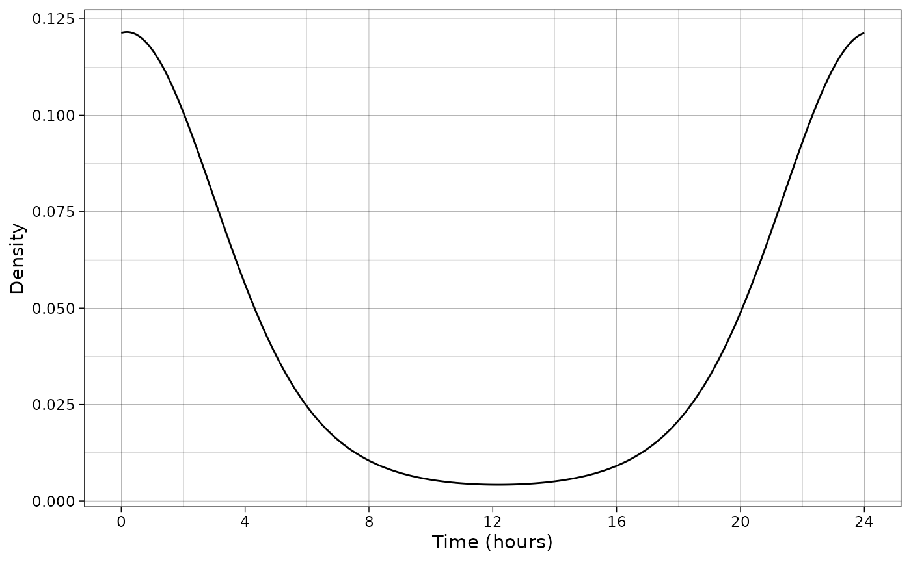
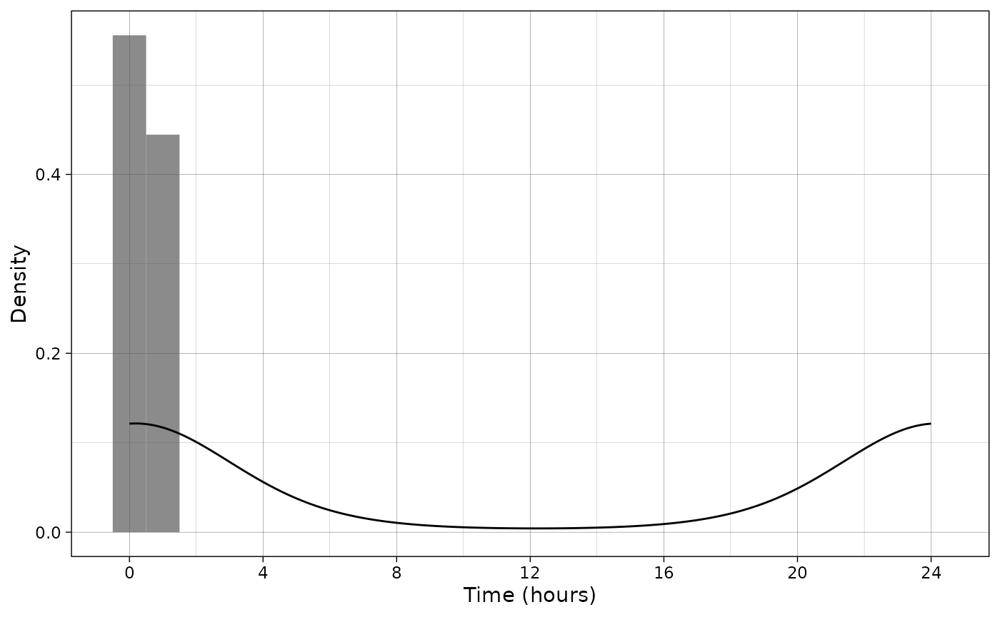

Activity patterns
activity-patterns.RmdThis vignette demonstrates how to infer and plot species activity patterns.
Import and prepare data
data(recordTableSample, package = "camtrapR")
# recordTableSample$DateTimeOriginal <- as.POSIXct(recordTableSample$DateTimeOriginal)
# recordTableSample$Date <- as.Date(recordTableSample$Date)Infer activity patterns
First, we infer the species PBE circadian activity
pattern with a mixture of von Mises distributions using the function
fit_vonMises.
# Convert hours to times format
recordTableSample$Time <- chron::times(recordTableSample$Time)
# Select the desired species
PBE_records <- recordTableSample[recordTableSample$Species == "PBE", ]
# Fit distribution
vm1 <- fit_vonMises(PBE_records$Time, k = 1)Then, we can examine the model:
class(vm1)
#> [1] "movMF"
vm1
#> theta:
#> x y
#> 1 1.679677 0.08021026
#> alpha:
#> [1] 1
#> L:
#> [1] 8.312426We can also compute the density from the models parameters using
vonMises_density.
d_vm1 <- vonMises_density(vm1)By default, the density will be computed from 0 to \(2\pi\) with a step of 0.01 but this can be
changed with the x argument.
d_vm1 <- vonMises_density(vm1,
x = circular::circular(seq(0, 2 * pi, by = 0.001), units = "radians"))Then we can plot the inferred model.
ggplot(d_vm1) +
geom_line(aes(x = x, y = density)) +
scale_x_continuous(breaks = seq(0, 24, by = 4)) +
xlab("Time (hours)") +
ylab("Density") +
theme_linedraw()
It is also possible to plot the binned data:
ggplot(d_vm1) +
geom_histogram(data = PBE_records,
aes(x = Time,
y = after_stat(density)),
binwidth = 1,
alpha = 0.7) +
geom_line(aes(x = x, y = density)) +
scale_x_continuous(breaks = seq(0, 24, by = 4)) +
xlab("Time (hours)") +
ylab("Density") +
theme_linedraw()